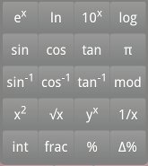
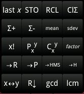
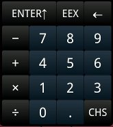
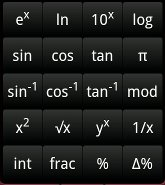
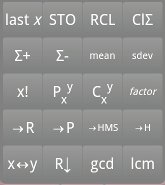

Digits Keyboard
Digits KeyboardThis is a RPN calculator for android. RPN stands for Reverse Polnish Notation - see RPN at wikipedia. If you are not familar with RPN you might prefer another calculator such as.
| Virtual Keyboards | how to find all keys |
| Tricks | some tricks |
| Number Range | what numbers are there |
| Stack | about the stack registers |
| Options | what options are there |
| All Keys | detailed infos about all keys |
| Functions & Input & Output | detailed infos about all functions and their effects on the stack |
There are three keyboards to have all keys of the calculator. You can switch from one keyboard to the other by sliding it away to the right for one other board - or to the left for the third board. The boards are arranged cyclic, so you can ever get to the other two regardless where you are.
|  |  |  |  |  |
| Functions | Statistics | Digits | Functions | Statistics |
You have three choices to get the right keyboard in focus. You can slide it in with your fingers as descriped obove - you can use the menu - or you can use the cursor keys (left, right) or your trackball depending on your device.
Digits KeyboardThis keyboard is to enter numbers and basic arithmetic operations.
Numbers are entered in natural way; EEX enters the exponent; CHS change the sign of mantissa or exponent dependig which part you actualy enter. If you start entering a number with EEX the mantissa 1 is entered automaticly for you.
← deletes the last entered digit. If you long press this key (or you are not in the number input mode) it deletes the whole X register.
 Functions Keyboard
Functions KeyboardThe keylabels describe them selve.
 Statistics Keyboard
Statistics KeyboardThis is for statistics, storage, transformation and stack manipulation.
Cause there are too few keys on one keyboard, there are some tricks to press keys not shown on the actual keyboard. These tricks are gestures with your fingers on the display area.
| gesture in display | effect |
|---|---|
| move left or move right | X↔Y |
| move down | R↓ |
| move up | R↑ |
If you long press the folowing keys you will get other effects.
| key to press long | effect |
|---|---|
| RCL | show options and registers |
| ← | clear X regardless if in number input mode or not |
All calculations are done with javas Math double. So you will see numbers between ±1.797693135 10308. The smallest positive number greater than 0; ε = 4.940656458 10-324. Depending on your calculations you can also get NaN or ±∞. NaN stands for Not A Number - which will say there is no real numeric result - e.g. 0/0 = NaN . With ±∞ you can still calculate - e.g. tan-1(∞) = π/2 .
This calculator has four stack register: X, Y, Z, T like the old good HP25, HP67, HP41C etc. - the lastX register save the value from X before the last operation. Calculations are done with X or X and Y and the result(s) are saved in X or X and Y or (in case of factor) in X, Y and Z. The display allways displays the X register.
For stack manipulation you can use the keys R↓ and X↔Y. R↓ rotates the four stack registers cyclic - move Y to X and so forth.
When the stack is dropped T keeps its old value. This can be used to calculate polynomials with the Horna scheme (x is kept in T and come down to Z and Y):
anxn + an-1xn-1 + ... a2x2 + a1x + a0
Enter x - press ENTER↑ three times enter an press ×, start with an-1 and work down to a1 - enter ai press + press × - at least enter a0 press + .
 Options
OptionsTo get the options you can use the menu or you long press the RCL key. The options are to select the display format, the angle mode and to display all registers. Use this to see which register (R4..R9) saves which statistics result.
Shifts all stack registers up (T is lost) - X is duplicated and the auto stack lift is disabled.
Enter exponent.
Change sign - while in number input changes the sign of mantissa or exponent. If not in number input changes the sign of X.
Clear last entered digit if in number input mode - zeros the X register otherwise.
Basic arithmetic operates on Y and X - e.g. Y ÷ X
These function operate on X - e.g. ex replace X with eX. ln is logarithm base e - log is logarithm base 10.
Simply lifts the stack and place π in X.
Operate on Y and X but does not drop the stack. Y is kept and X is replaced with Y·X/100 . If you want to add 15% to 42: Enter 42 press ENTER↑ enter 15 press % now you can see 15% of 42 in X press + to add it to Y which still holds 42.
This is the reverse operation of %. Calculate the percentual difference between X and Y . Y is 100% and Y is kept while no stack drop accure. X is replaced with 100·(X - Y)/Y .
These functions reduce information. int keeps the integer part of X and drops the fraction part. frac keeps the fraction part and drops the integer part.
Lifts the stack and replace X with the X before the last operation.
There are 10 registers to save values beside the stack. The registers are named R0, R1, ... R9. To get a value from a register press RCL (the keyboard automaticly swaps to the digits) and press the digit key for the register 0..9 . To save the value from X in a register press STO (the keyboard is also swapped) and then press the digit key for the register. You can also use simple register aritmetic. The register aritmetic works with +, -, × and ÷. E.g.: press STO + 2 to add the content of X to the content of R2 and save the result in R2.
This simply clears the statistics registers R4..R9 and is used to start a statistical computation.
The values in X and Y are added the the statistic registers. Y keeps it value, X is replaced with n - the values count. After Σ+ and Σ- the stack lift is off - so you can get the old tuple by pressing last x . Σ- is to correct a wrongly enterd tuple. The registers used for statistics are:
| R4: | Σx |
| R5: | Σx2 |
| R6: | Σy |
| R7: | Σy2 |
| R8: | Σxy |
| R9: | n |
This calculates the factorial of X. If X is not an integer number the factorial is calculated from the integer part of that number.
Calculating the number of X-permutations of Y.
Calculating the number of X-combinations of Y. This is the number of possibilities to get subsets of X elements out of Y elements.
If you enter only interger numbers in Y and X this calculates the remainder of the integer divison Y / X . But this function do a more general approach. (Without looking at the sign) you get the greatest number m less than X so that Y = m + k · X (k is an integer - X, Y and m are not necessary integers).
Convert rectangular coordinates y stored in Y and x stored in X into polar coordinates r stored in X and φ stored in Y.
Convert polar coordinatesr r stored in X and φ stored in Y into recangular coordinates y stored in Y and x stored in X.
Convert decimal hours (or degres) stored in X into hours, minutes and seconds in X. Hours are left of the decimal point - minutes are at tenth and hundreth - seconds at thousandths and ten thousendth. E.g. 3.5 →HMS you get 3.3000 - 3 hours, 30 minutes 0 seconds.
Convert hours (or degres) stored in X as hours, minutes and seconds to decimal hours in X. E.g. (11:59:24) 11.5924 →H you get 11.99 (decimal hours). Some example: You start at 8:17 and work until 11:39 - how many hours did you work? 11.39 →H 8.17 →H - your work took 3.37 hours.
Exchange the stack registers X and Y.
Rolls down the stack registers - will say X gets the value of Y, Y gets the value of Z, Z gets the value of T and T gets the value of X.
This calculates the greatest common divisor of the integer parts of X and Y, drops the stack and leave the result in X.
This calculates the less common multiply of the integer parts of X and Y, drops the stack and leave the result in X.
This is the only function with 1 input (X) and 3 results X, Y and Z. X is reduced to its integer part u (positive or negative). Pressing factor while u in X leave n in X, p in Y and v in Z, where pn · v = u . p is prime and the smallest prime factor of u and n its power. The values n, p and v in X, Y and Z has its motivation that you can press yx × to get u back again.
| function | input | output | comment | ||||||||||||||||
|---|---|---|---|---|---|---|---|---|---|---|---|---|---|---|---|---|---|---|---|
| ENTER↑ |
|
|
auto stack lift is turned off and t is lost | ||||||||||||||||
| X↔Y |
|
|
|||||||||||||||||
| R↓ |
|
|
|||||||||||||||||
| ← |
|
|
only if not in number input mode - or key is pressed long | ||||||||||||||||
| - + × ÷ yx mod Pxy Cxy gcd lcm |
|
|
|||||||||||||||||
| CHS ex ln 10x log sin cos tan sin-1 cos-1 tan-1 1/x x! int frac →HMS →H |
|
|
|||||||||||||||||
| % |
|
|
|||||||||||||||||
| Δ% |
|
|
|||||||||||||||||
| →P |
|
|
|||||||||||||||||
| →R |
|
|
|||||||||||||||||
| π last x RCLd |
|
|
|||||||||||||||||
| ClΣ STOd |
|
|
no effect on the stack | ||||||||||||||||
| Σ+ Σ- |
|
|
auto stack lift is turned off | ||||||||||||||||
| mean sdev |
|
|
|||||||||||||||||
| factor |
|
|
pn·u = int(x) |